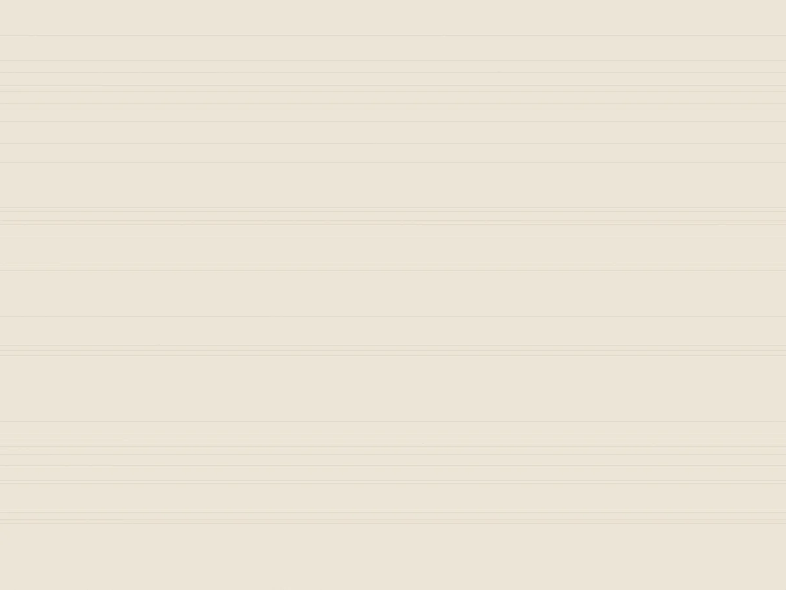

Registrering og salg
Vi registrerer og tar bilder av varelager og driftstilbehør, kontrollerer pantestatus og går gjennom balansen.
Vi har tre forretningsområder, og bistår innen alle bransjer. Ved behov knytter vi til oss samarbeidspartnere.
Vi registrerer og tar bilder av varelager og driftstilbehør, kontrollerer pantestatus og går gjennom balansen.
Kontroll på nøkler og adgangssituasjon, låser skiftes ved behov. Vi kan også oppbevare verdiene på eget lager.
Vi bistår advokat eller etterlatte i forbindelse med arv, skifte og dødsbo – og tar oss av salg.
Rådgivning for ledelse, eiere og rådgivere som skal finne løsninger som redder verdier og arbeidsplasser.
Balanse og pantestatus gjennomgås for å avdekke verdier som ellers ville gått tapt.
Bredt nettverk av kunder og samarbeidspartnere – verdiene når flere kjøpere.

Ved registrering dokumenterer vi det som finnes: varelager, driftstilbehør og verdier. Det gir bostyrer og bank et grunnlag å beslutte ut fra, og kjøper en trygg handel.
Ta kontakt for en uforpliktende samtale om saken. Vi sier hva den krever, og hvordan vi kan bistå.